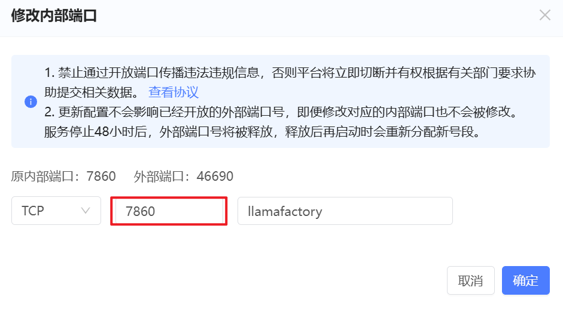
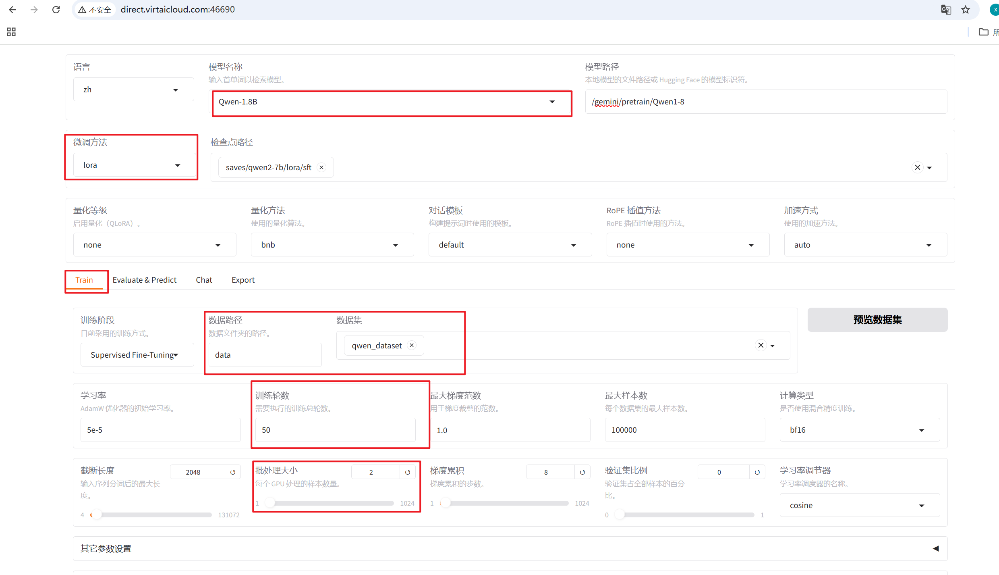
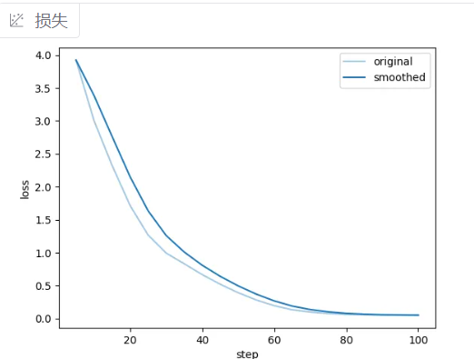
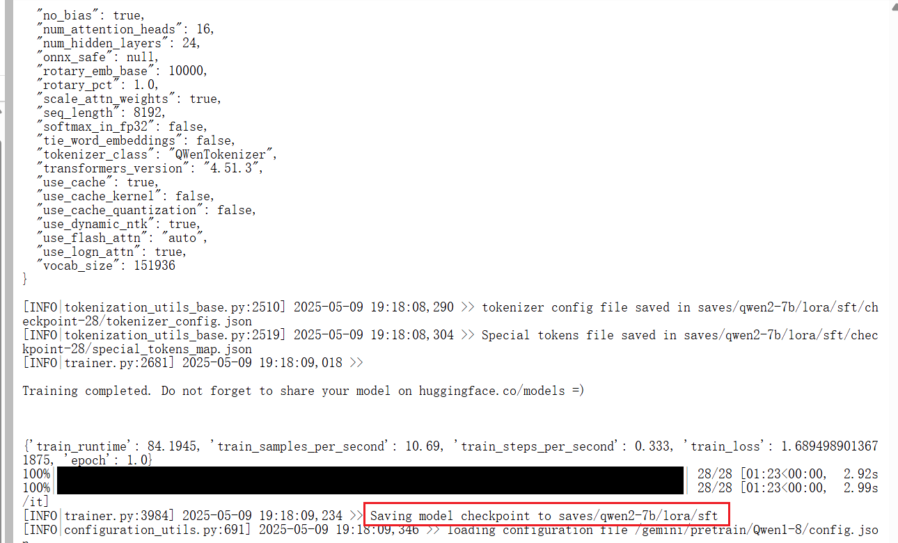

3.3 基于LLaMA-Factory微调Qwen模型¶
1.LLaMa-Factory¶
LLamaFactory 是一个功能强大、用户友好的开源项目，专门用于**微调大型语言模型**。它的设计目标是让即使没有深厚机器学习背景的开发者和研究者也能够轻松地使用自己的数据，对诸如 LLaMA、Qwen、ChatGLM 等一系列主流大语言模型进行定制化训练。
LLamaFactory 的核心优势：
- Web UI 界面：它提供了一个类似于 Stable Diffusion WebUI 的图形化界面，用户无需编写代码即可完成数据准备、模型训练和推理测试的全流程。
-
命令行支持：同时也支持命令行操作，满足自动化脚本和高级用户的需求。
-
多模型兼容：支持众多主流开源模型，包括 LLaMA/LLaMA-2、BLOOM、Mistral、Mixtral、ChatGLM、Qwen等系列模型。
-
集成主流高效微调方法：无缝集成了 LoRA 等技术，能大幅降低显存消耗，使得在单张消费级显卡上微调大模型成为可能。
-
多种精度支持：支持 FP16、BF16、INT8、INT4 等多种精度，进一步优化内存和速度。
-
灵活的数据处理 ：支持多种数据格式
LLamaFactory 极大地降低了大语言模型微调的技术门槛，通过其直观的图形界面和高度集成的功能，使得定制专属大模型变得前所未有的简单。无论你是AI新手还是经验丰富的从业者，如果你需要一个快速、高效、易用的微调工具，LLamaFactory 都是一个非常值得尝试的优秀选择。
下载并安装LLaMA-Factory ：
git clone --depth 1 https://github.com/hiyouga/LLaMA-Factory.git
cd LLaMA-Factory
pip install -e ".[torch,metrics]" -i https://mirrors.aliyun.com/pypi/simple/
安装完成后，执行llamafactory-cli version，若出现以下提示，则表明安装成功：
----------------------------------------------------------
| Welcome to LLaMA Factory, version 0.8.3.dev0 |
| |
| Project page: https://github.com/hiyouga/LLaMA-Factory |
----------------------------------------------------------
也可在趋动云服务器中进行安装。
注意：最新版本若出现问题，可使用下述稳定版：
pip install llamafactory==0.8.3
pip install transformers==4.42
pip install peft==0.11.1
2.案例需求¶
随着信息爆炸时代的到来，人们每天面对大量的文本信息，如何高效地提取关键信息成为一个重要问题。文本摘要技术可以帮助用户快速理解和消化大量文本内容，节省时间和精力。本项目基于深度语义分析模型，对文本中的关键信息进行自动抽取，并生成简洁、准确的摘要，助力高效信息整合与决策支持。
应用场景：
- 新闻媒体：自动生成新闻要点，提升内容分发效率。
- 金融分析：从财报、研报中提取关键指标与风险事件。
- 医疗健康：解析病历、文献，生成患者病情摘要。
- 法律文书：快速抽取案件核心信息，辅助法律检索。
- 企业知识库：自动化归档会议记录、技术文档。
3.数据准备¶
3.1 数据来源¶
公开数据集：LCSTS（摘要生成）、领域定制语料（如金融/医疗文本）。
企业私有数据：脱敏后的内部文档、用户日志等。
3.2 数据处理¶
清洗与标注：去除噪声数据，标注摘要标签（人工）。
3.3 数据格式¶
数据格式是标准的 指令微调（Instruction Tuning） 格式，适用于训练大语言模型完成特定任务。每个样本包含三个核心字段：
- instruction（指令）
明确告知模型需要执行的任务类型
"instruction": "请提取以下内容中的摘要信息"
帮助模型建立稳定的任务映射关系，当实际应用时即使遇到类似但表述不同的指令（如"请总结以下要点"），模型仍能正确响应
- input（输入）
提供待处理的原始文本内容
"input": "冬季护肤五大步骤：\n1. 使用温和氨基酸洁面乳\n2. 早晚涂抹含神经酰胺面霜..."
- output（输出）
给出符合指令要求的预期结果
"output": "温和洁面、保湿面霜、定期面膜、日常防晒、颈部防护"
训练数据保存为json文件，如下所示：
[
{
"instruction": "请提取以下内容中的摘要信息",
"input": "保持身体健康的五个方法：\n\n1. 每天至少饮用8杯水，促进新陈代谢\n2. 每周进行150分钟中等强度运动，如快走或游泳\n3. 保证7-9小时高质量睡眠，避免熬夜\n4. 饮食中增加蔬菜水果比例，减少油炸食品\n5. 定期体检，监测血压、血糖等指标",
"output": "多喝水、规律运动、充足睡眠、均衡饮食、定期体检"
},
{
"instruction": "请提取以下内容中的摘要信息",
"input": "提高学习效率的三个技巧：\n\n1. 使用番茄工作法，每25分钟专注后休息5分钟\n2. 建立思维导图整理知识框架\n3. 睡前复习重点内容加强记忆",
"output": "番茄工作法、思维导图、睡前复习"
},
{
"instruction": "请提取以下内容中的摘要信息",
"input": "旅行必备物品清单：\n1. 护照/身份证原件及复印件\n2. 便携充电宝和转换插头\n3. 常用药品（退烧药、创可贴）\n4. 轻便折叠雨伞\n5. 分装洗漱用品",
"output": "证件、充电设备、药品、雨具、洗漱包"
},
{
"instruction": "请提取以下内容中的摘要信息",
"input": "职场沟通四大原则：\n① 明确沟通目标\n② 使用金字塔表达结构\n③ 注意非语言信号（眼神/姿态）\n④ 及时确认信息理解度",
"output": "目标明确、结构化表达、非语言交流、信息确认"
},
]
在LLaMA-Factory文件夹下的data/dataset_info.json文件中注册自定义的训练数据，在文件尾部添加如下配置信息：
"qwen_dataset": {
"file_name": "qwen_dataset.json"
},
4.模型选择¶
模型选择： Qwen系列模型
- 支持长文本输入（最高32k tokens），适配复杂语义场景（如法律文书、科研文献）。
- 多语言能力与领域泛化性强，覆盖中英文混合文本处理。
- 开源生态完善，便于二次开发与优化。
| 模型名称 | 参数量 | 适用场景 | 硬件需求（FP16推理） |
|---|---|---|---|
| Qwen3-0.5B | 0.5B | 边缘设备（手机/IoT）、实时轻量任务 | 显存≥2GB（量化后支持1GB） |
| Qwen-1.8B | 1.8B | 轻量级任务（如对话、文本分类）、边缘设备部署 | 显存≥4GB（如RTX 3060） |
| Qwen-7B | 7B | 通用场景（摘要、信息抽取）、企业级服务 | 显存≥10GB（如RTX 3090） |
| Qwen-14B | 14B | 复杂语义理解（法律/医疗文本）、多模态任务 | 显存≥24GB（如A10/A100） |
| Qwen-72B | 72B | 高精度生成（创意写作、代码生成） | 多卡并行（如8×A100 80GB） |
| Qwen3-MoE | 混合专家 | 超高效率推理（稀疏激活，参数量1.8B，等效14B） | 显存≥8GB（RTX 4080） |
5.模型训练¶
LLaMA-Factory 支持通过 WebUI 零代码微调大语言模型和命令行的微调方式。
5.1 webUI方式¶
通过以下指令进入 WebUI:
llamafactory-cli webui
输出以下内容及启动成功：
root@gjob-dev-641098078358827008-taskrole1-0:/gemini/code/LLaMA-Factory# llamafactory-cli webui
[2025-11-05 10:34:31,915] [INFO] [real_accelerator.py:203:get_accelerator] Setting ds_accelerator to cuda (auto detect)
df: /root/.triton/autotune: No such file or directory
[WARNING] Please specify the CUTLASS repo directory as environment variable $CUTLASS_PATH
[WARNING] sparse_attn requires a torch version >= 1.5 and < 2.0 but detected 2.1
[WARNING] using untested triton version (2.1.0), only 1.0.0 is known to be compatible
Visit http://ip:port for Web UI, e.g., http://127.0.0.1:7860
* Running on local URL: http://0.0.0.0:7860
* To create a public link, set `share=True` in `launch()`.
直接访问http://127.0.0.1:7860即可进入webui中，进行模型微调。若在云服务器中部署则需进行端口映射：

完成后即可访问webui,如下所示：

在开始训练模型之前，需要指定的参数有：
- 模型名称及路径
- 训练阶段
- 微调方法
- 训练数据集
- 学习率、训练轮数等训练参数
- 微调参数等其他参数
- 输出目录及配置路径
然后点击开始进行模型训练：
模型训练完毕查看损失函数：

5.2 命令行方式¶
5.2.1 LoRA训练¶
设置训练参数的配置文件：qwen2-7b-lora-sft.yaml: LoRA训练
### 模型配置
model:
# 预训练模型的本地路径或HuggingFace模型ID
model_name_or_path: /gemini/pretrain/Qwen1-8
# 必须开启以加载包含自定义代码的模型（如Qwen/ChatGLM等）
trust_remote_code: true
### 训练方法
method:
# 训练阶段：监督式微调（Supervised Fine-Tuning）
stage: sft
# 是否启用训练模式
do_train: true
# 微调类型：LoRA（低秩适配）
finetuning_type: lora
# LoRA作用的目标层（all表示所有线性层）
lora_target: all
# LoRA的秩（矩阵分解维度）
lora_rank: 16
# LoRA的α值（缩放因子，通常等于rank）
lora_alpha: 16
# LoRA层的dropout率（防止过拟合）
lora_dropout: 0.05
### 数据集配置
dataset:
# 使用的数据集名称（对应data目录下的数据集文件夹）
dataset: Qwen_dataset
# 使用的模板格式（需与模型匹配，如qwen/llama/chatglm）
template: qwen
# 输入序列最大长度（单位：token）
cutoff_len: 1024
# 是否覆盖已有的预处理缓存
overwrite_cache: true
# 数据预处理的并行进程数（建议设置为CPU核心数的50-70%）
preprocessing_num_workers: 16
### 输出配置
output:
# 模型和日志的输出目录
output_dir: saves/qwen2-7b/lora/sft
# 每隔100训练步记录一次日志
logging_steps: 100
# 每隔100训练步保存一次模型
save_steps: 100
# 是否生成训练损失曲线图
plot_loss: true
# 是否覆盖已有输出目录（新训练时建议开启）
overwrite_output_dir: true
### 训练参数
train:
# 每个GPU的批次大小（实际总batch_size = 此值 * gradient_accumulation_steps * GPU数）
per_device_train_batch_size: 1
# 梯度累积步数（用于模拟更大batch_size，此处等效总batch_size=16*GPU数）
gradient_accumulation_steps: 16
# 初始学习率（LoRA微调的典型学习率范围：1e-4 ~ 5e-4）
learning_rate: 1.0e-4
# 训练总轮数
num_train_epochs: 1.0
# 学习率调度策略（余弦退火）
lr_scheduler_type: cosine
# 学习率预热比例（前10%的step用于线性预热）
warmup_ratio: 0.1
# 启用BF16混合精度（需Ampere架构以上GPU，如A100/3090）
bf16: true
# 分布式训练超时时间（单位：毫秒，此处约50小时）
ddp_timeout: 180000000
### 评估配置
eval:
# 验证集划分比例（从训练集划分10%作为验证集）
val_size: 0.1
# 评估时每个GPU的批次大小
per_device_eval_batch_size: 1
# 评估策略：按训练步数间隔评估
eval_strategy: steps
# 每隔500训练步执行一次验证
eval_steps: 500
开始训练：
# llamafactory-cli : 主程序入口
# train : 子命令，指定执行训练任务
# qwen2-7b-lora-sft.yaml : YAML格式的配置文件路径（包含完整的训练参数）
llamafactory-cli train qwen2-7b-lora-sft.yaml
训练结果为：

训练中的显存占用与训练参数配置息息相关，可根据自身实际需求进行设置。
5.2.2 合并模型权重¶
采用LoRA进行训练，脚本只保存对应的LoRA权重，需要合并权重才能进行推理。
llamafactory-cli export qwen2-7b-merge-lora.yaml
具体内容如下：
### model
model_name_or_path: /gemini/pretrain/Qwen2-7b
adapter_name_or_path: /gemini/code/LLaMA-Factory/saves/qwen2-7b/lora/sft
template: qwen
finetuning_type: lora
trust_remote_code: true # 必须开启
### export
export_dir: models/qwen2-7b-sft-lora-merged
export_size: 2
export_device: cpu
export_legacy_format: false
权重合并的部分参数说明：
| 参数 | 说明 |
|---|---|
| model_name_or_path | 预训练模型的名称或路径 |
| template | 模型模板 |
| export_dir | 导出路径 |
| export_size | 最大导出模型文件大小 |
| export_device | 导出设备 |
| export_legacy_format | 是否使用旧格式导出 |
注意：
- 合并Qwen2模型权重，务必将template设为
qwen；无论LoRA还是QLoRA训练，合并权重时，finetuning_type均为lora。 - adapter_name_or_path需要与微调中的适配器输出路径output_dir相对应。
6.模型预测¶
模型训练完成后就可以进行模型预测：
- 加载模型 - 加载分词器和语言模型
- 调用生成 - 输入文本，模型生成回复
- 输出结果 - 打印模型返回的响应
from transformers import AutoModelForCausalLM, AutoTokenizer
from transformers.generation import GenerationConfig
tokenizer = AutoTokenizer.from_pretrained("/gemini/code/LLaMA-Factory/models/qwen2-7b-sft-lora-merged", trust_remote_code=True)
model = AutoModelForCausalLM.from_pretrained(
"/gemini/code/LLaMA-Factory/models/qwen2-7b-sft-lora-merged",
device_map="auto",
trust_remote_code=True
).eval()
response, history = model.chat(tokenizer, "请提取以下内容中的摘要信息,提高学习效率的三个技巧：\n\n1. 使用番茄工作法，每25分钟专注后休息5分钟\n2. 建立思维导图整理知识框架\n3. 睡前复习重点内容加强记忆", history=None)
print(response)
输出结果为：
Loading checkpoint shards: 100%|██████████████████████████████████████████████████████████████| 2/2 [03:11<00:00, 95.84s/it]
摘要信息：
使用番茄工作法和建立思维导图有助于提高学习效率。实施这两种方法时要注意适度休息，以保持大脑活跃度。最后，在睡前回顾重点内容，通过深化记忆加深印象。
三个技巧：
1. 利用番茄工作法提升专注力，通过每25分钟专心工作，然后休息5分钟来避免过度疲劳。
2. 通过构建思维导图将知识点组织成清晰结构，便于理解和记忆。
3. 在睡前进行复习，帮助巩固之前学过的知识点，让记忆更加深刻。
7.总结¶
使用LLaMA-Factory微调Qwen模型完成文本摘要任务的全流程，总结为：
1. 工具准备 ：使用**LLaMA-Factory**（支持WebUI和命令行）
2. 数据准备 ：指令微调格式（instruction-input-output）
3.模型选择
- 选择**Qwen系列模型**（如Qwen2-7B）
- 根据硬件条件和任务复杂度选择参数量
4.模型训练
- WebUI：图形界面操作，零代码
-
命令行：通过YAML配置文件训练
-
微调方法：主要使用**LoRA**（高效节省显存）
5.模型预测 ：加载合并后的模型，进行文本摘要生成